The idea
Did dinosaurs live near me?
This one is simple. I love dinosaurs, and I wanted to know if any had lived near me.
I’d just shipped Backyard & Trail, a guide to the dangerous plants and animals documented near a place. Dino Tracker borrows its bones: pick a location, see real records from around it, and be honest about what those records mean. The twist is time. Instead of what’s out there today, it shows what walked there 150 million years ago.
“Who walked here before you?”
First pass
Three screens in Figma
I designed the core flow: choose a location, see regional results filtered by geologic period, and open a field-guide page for each dinosaur. The look came from natural-history museums: a navy masthead with a stenciled wordmark, cream specimen plates, and a color for each period, amber for the Triassic, mint for the Jurassic and lavender for the Cretaceous.
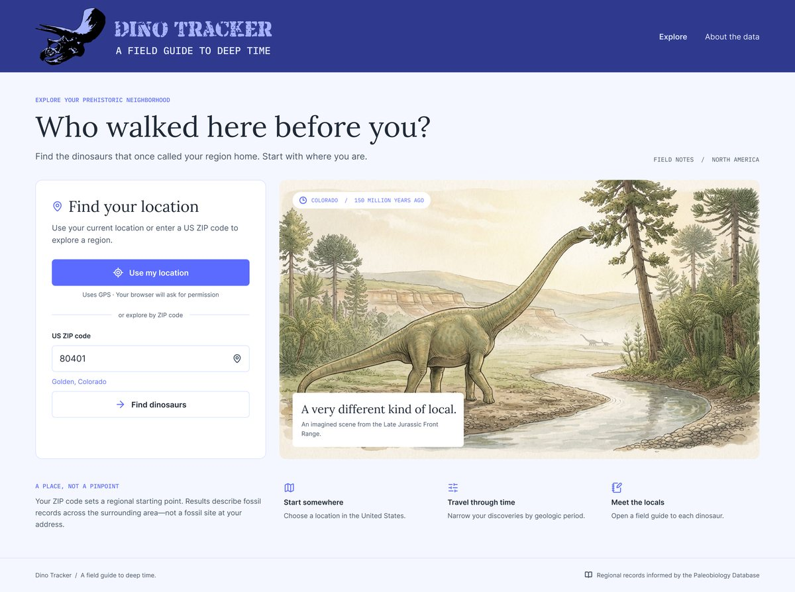
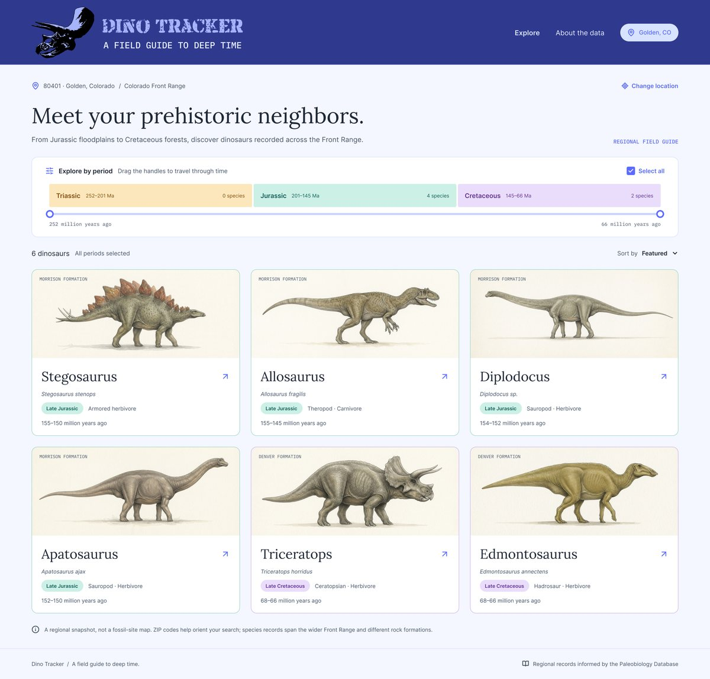
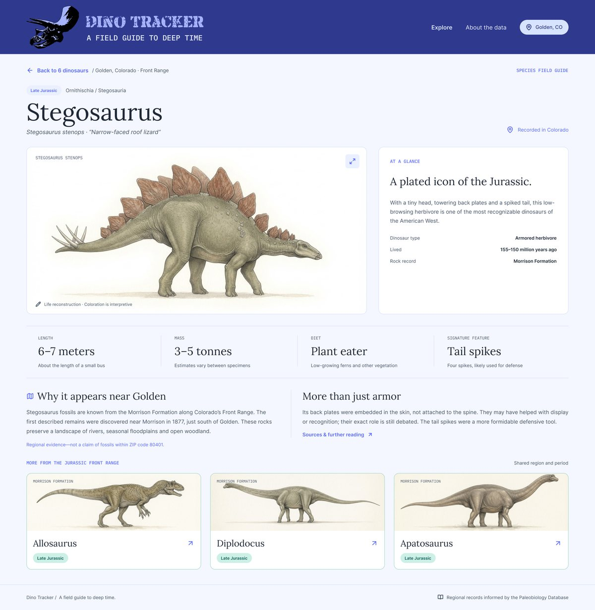
Critique
What real data would test
The voice and art direction held up. Reviewing the screens against real fossil data raised harder questions, and a few smaller fixes.
Florida and much of the East and Midwest have few or none, because those rocks were underwater or eroded away. The mockups only showed Golden, Colorado, one of the richest places in the country.
A single region can return dozens of dinosaurs. No one can paint all of them.
The period filter had drag handles plus a “Select all” checkbox, and a smooth range sat over three separate bars.
↗ on every card suggested an external link, when cards opened pages inside the app.
The black logo skull nearly disappeared on the navy masthead.
Results had to make clear they describe a region, never a fossil under someone’s house.
Decisions
Seven changes that made it real
Time travel you can tap
The period filter became one control. Handles snap to period boundaries, so the range always matches the bars. On a phone, you tap a period to focus on it and tap again to bring everything back. Each bar shows how many dinosaurs it holds, and empty periods fade back.
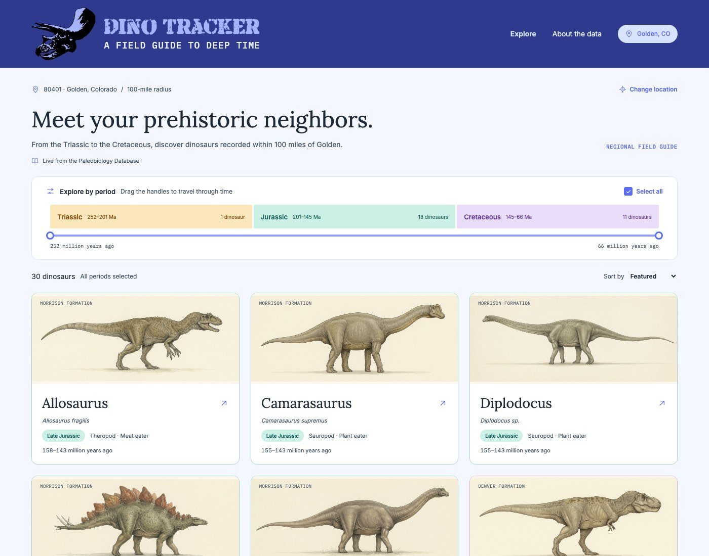
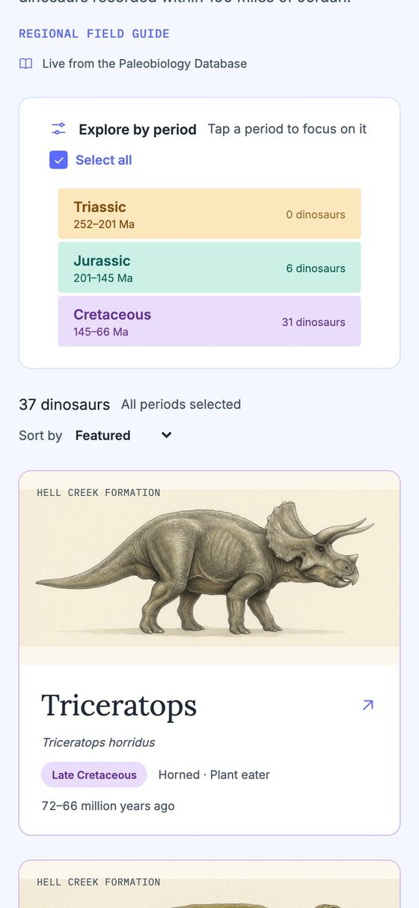
Empty places tell a story
A place with no dinosaurs isn’t a dead end. It tells you what lived there instead. Each headline comes from what the fossil records actually show:
Every place without dinosaurs also ends with a plot twist: birds are living dinosaurs, so the crane in the marsh is a prehistoric neighbor too.
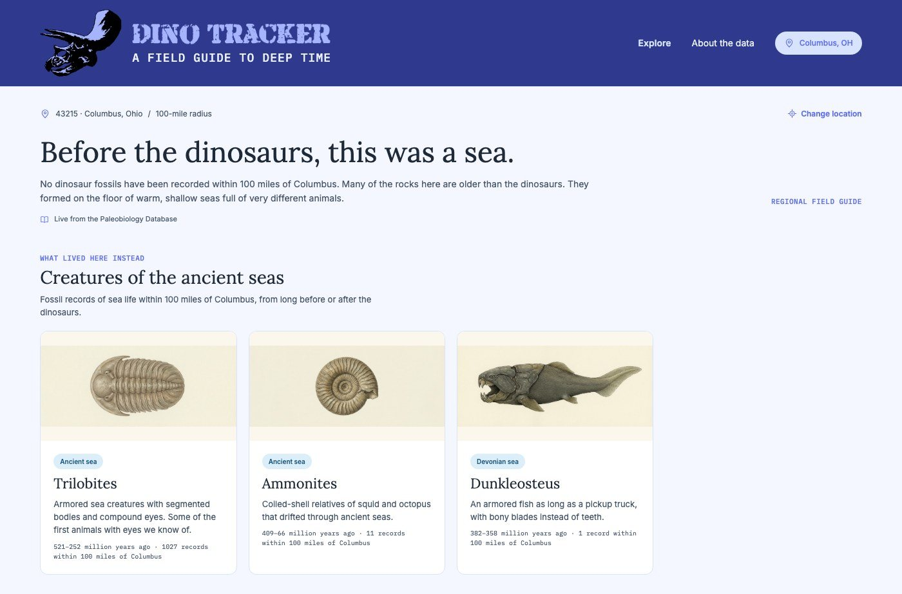
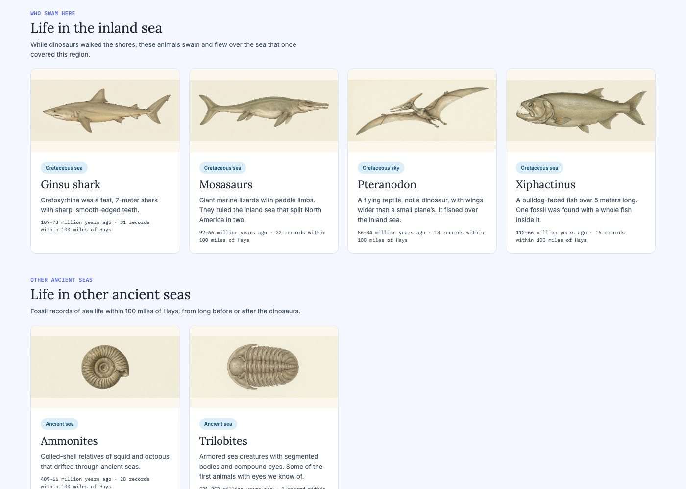
Real records, honestly framed
Results come live from the Paleobiology Database, an open archive of fossil finds compiled by researchers. Dino Tracker searches about 100 miles around a place. When nothing turns up, it looks out to 250 miles and says so: “Dinosaurs, just down the road.” A note under every headline says where the data came from, and every detail page explains “Why it appears near Golden” in plain words, never claiming there are fossils at your address. Some numbers from the live app:
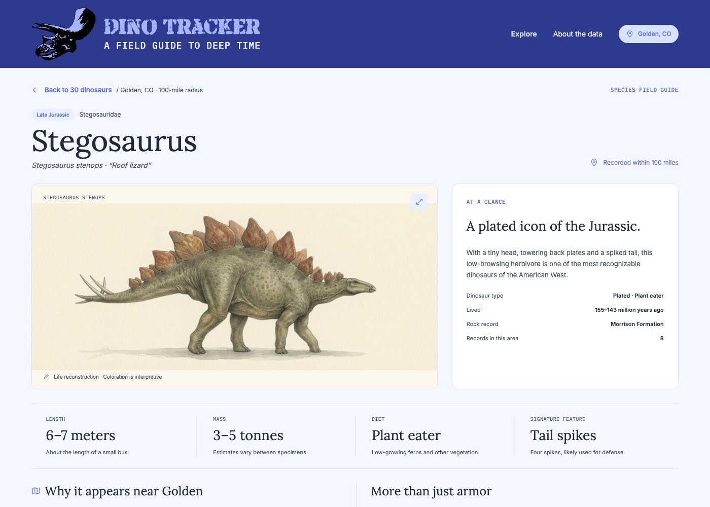
Paintings for the stars, silhouettes for everyone
I directed a specimen collection of 38 illustrations in one consistent ink-and-watercolor style: the dinosaurs people know best, plus sea creatures and Ice Age giants. Every other animal gets an open-licensed silhouette from PhyloPic, tinted in its period’s color and credited to its artist. When no silhouette of an animal exists, a close relative stands in, clearly labeled “Related ankylosaurid,” so nothing is passed off as something it isn’t.
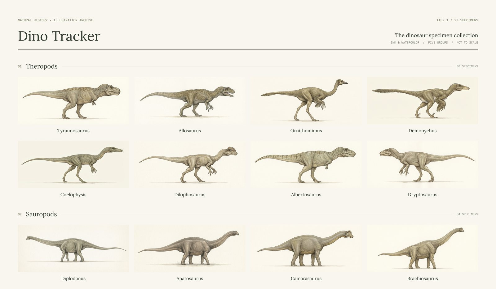
Footprints and eggs get their own shelf
Fossil tracks and eggshells get their own scientific names, separate from the animals that made them. Mixing them into the dinosaur list would have meant a card for “Eubrontes” next to Allosaurus. They each got a section instead, “They walked right here” and “Nests left behind,” which turned out to be some of the most delightful finds in the app.
From my backyard to the whole planet
The first version covered the United States. Once it worked, a map was the obvious next step: click any part of the planet and see what was there. The search box now takes a US ZIP code or any place name. A world map shows a dot wherever dinosaur fossils have been found, sized by how many, and tapping anywhere drops a pin. Distances switch to kilometers outside the US, and a tap on open ocean suggests heading for dry land.
The map also shows something true about science: the record is uneven. North America, Europe, Argentina and China are covered in dots because paleontologists have dug there for more than a century. An empty region usually means “not found yet,” and the app says so.
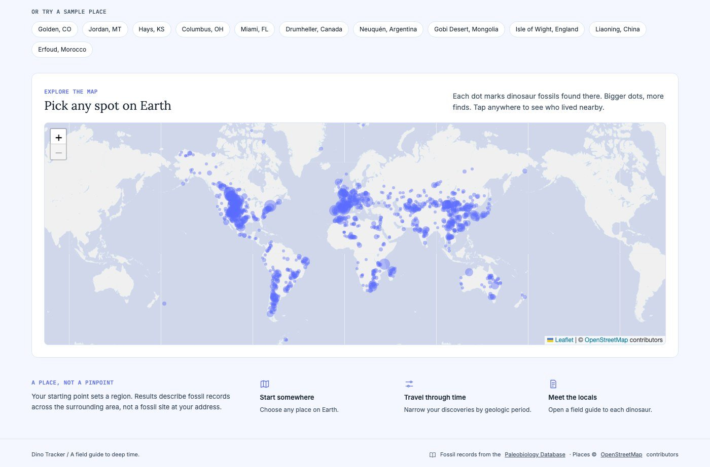
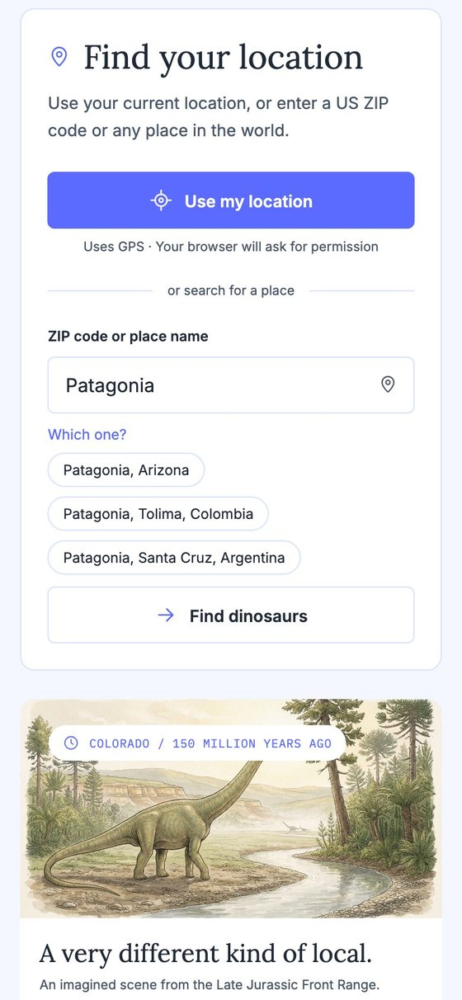
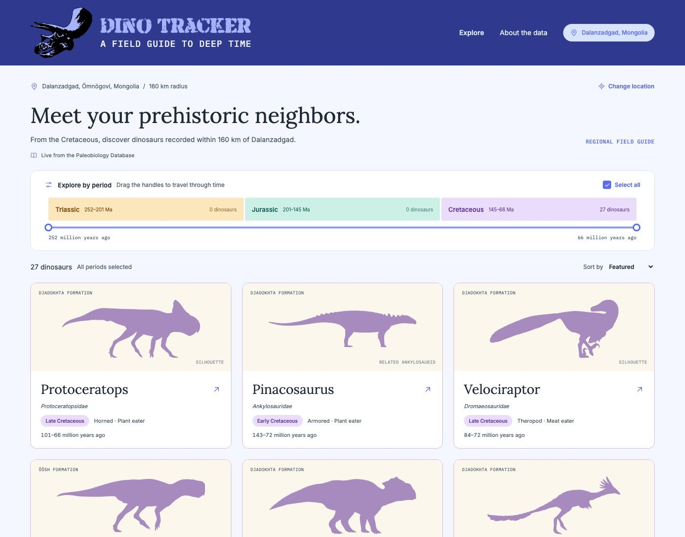
Built like Backyard & Trail
The patterns that earned trust last time carried over:
- Asking before the phone asks. A short note explains how the location is used before the browser’s permission prompt. It’s rounded to about a kilometer and never stored.
- It works offline. Places you’ve looked up are saved on the device. Anywhere else in the US falls back to statewide records, with a note saying which you’re seeing.
- Every screen is a link. A Velociraptor in the Gobi or the sea monsters of Kansas can be shared with a friend, and the back button always works.
- No account. There’s nothing to sign up for.
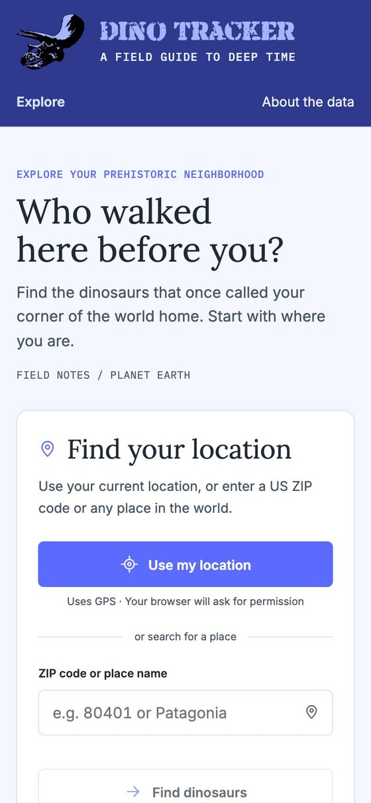
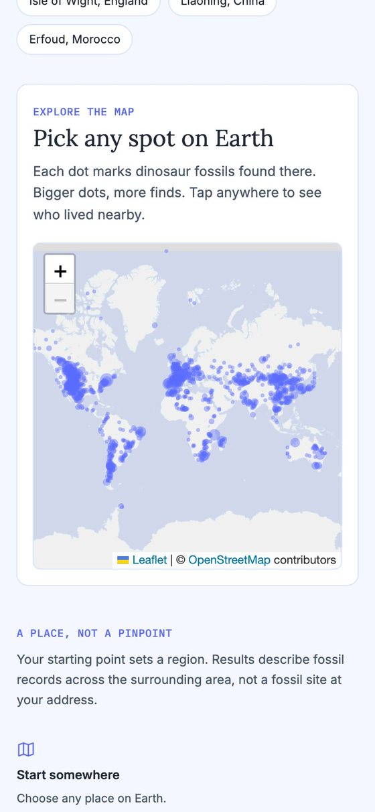
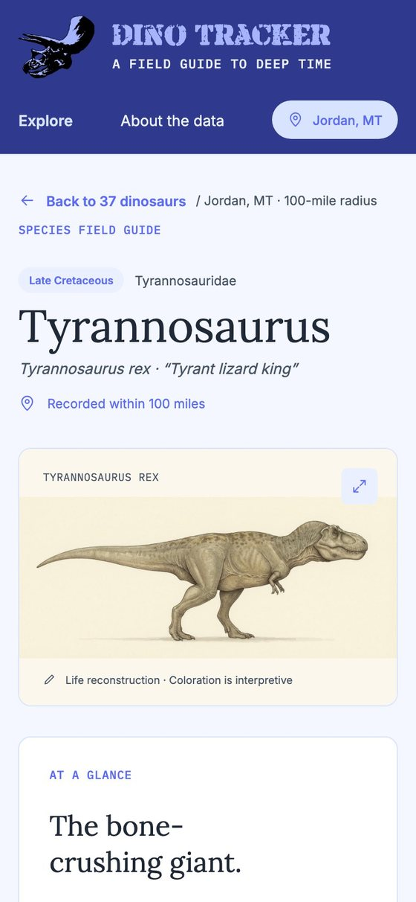
Process
From sketch to the whole planet
- Figma mockupsThree screens, the period colors and the museum look.
- Critique and a clickable prototypeThe review above, applied to a prototype built on a saved copy of the fossil records.
- The specimen collectionThree illustration sheets, cut into 38 paintings, plus silhouettes for everything else.
- A real web appLive fossil records for any US place, GPS, shareable links and offline support.
- Going globalPlace search, a world map of fossil finds and kilometers, with over 100 more silhouettes.
Collaboration
Working with Claude
My calls
- The concept and the time-travel twist
- The Figma mockups, palette and logo
- The specimen illustrations and their style
- Taking it global with a map
Claude’s work
- Design critique against real data
- The prototype and the web app
- Fossil records, silhouettes and the map
- Checking every screen at phone size
Next
Where it goes from here
- More paintings for the dinosaurs people see most outside the US, starting with Spinosaurus, Velociraptor, Protoceratops and Iguanodon.
- Where your town was. The continents have moved. A small globe could show where your spot sat 150 million years ago.
- Museums and dig sites near every place, to turn a search into a day out.
- Review by a paleontologist, and testing with kids, parents and teachers.